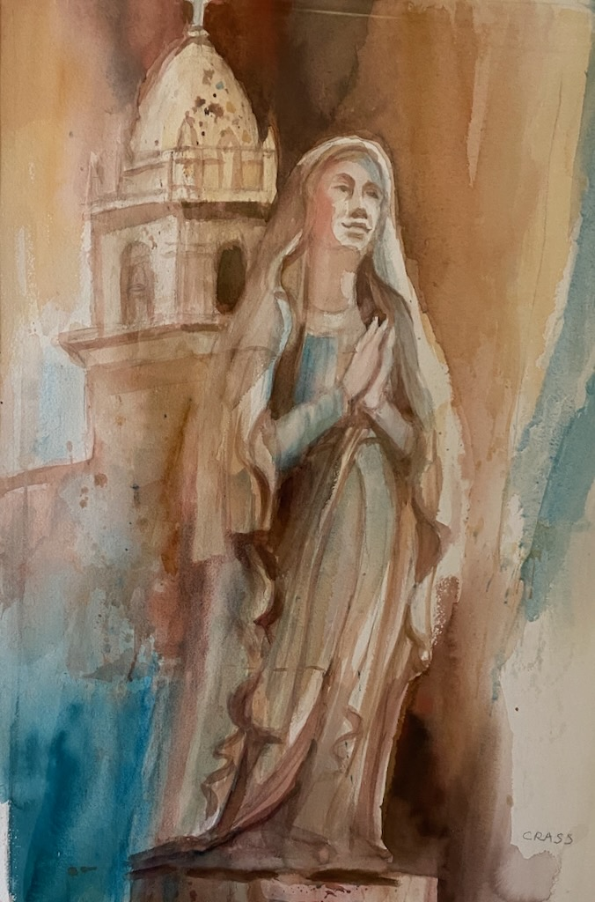
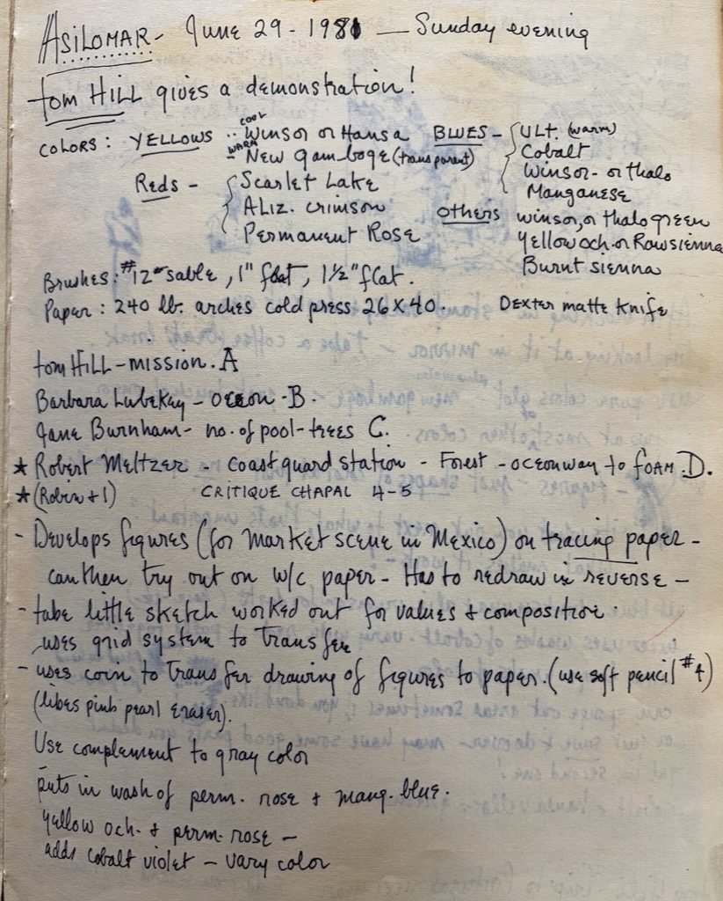
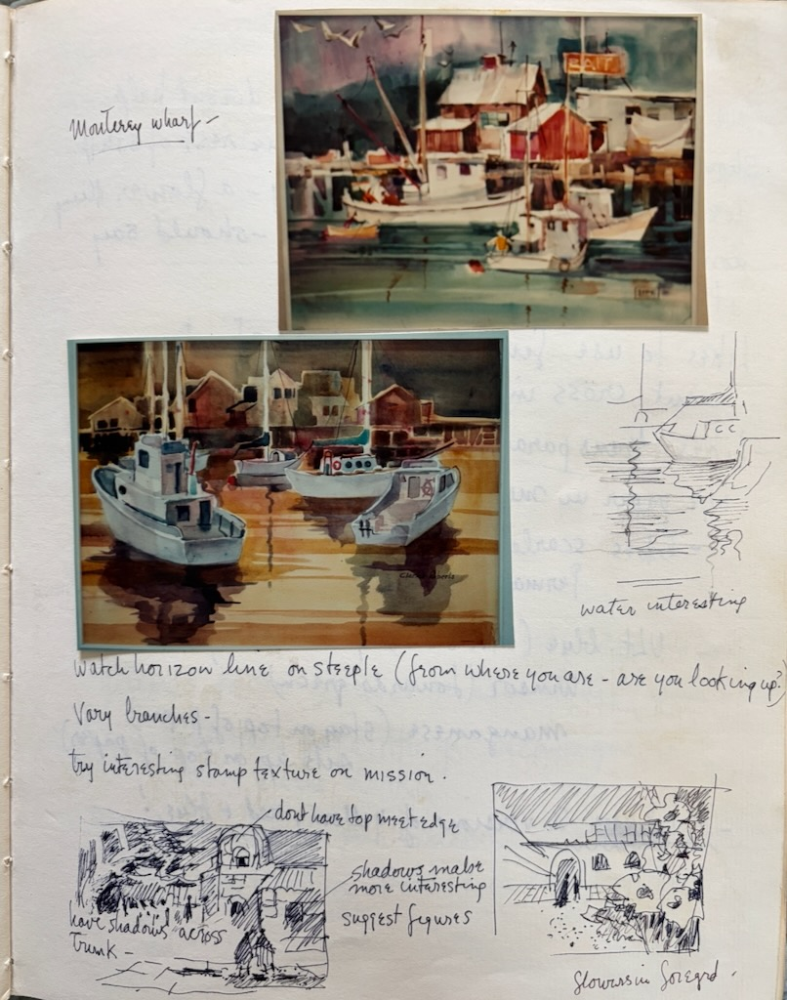
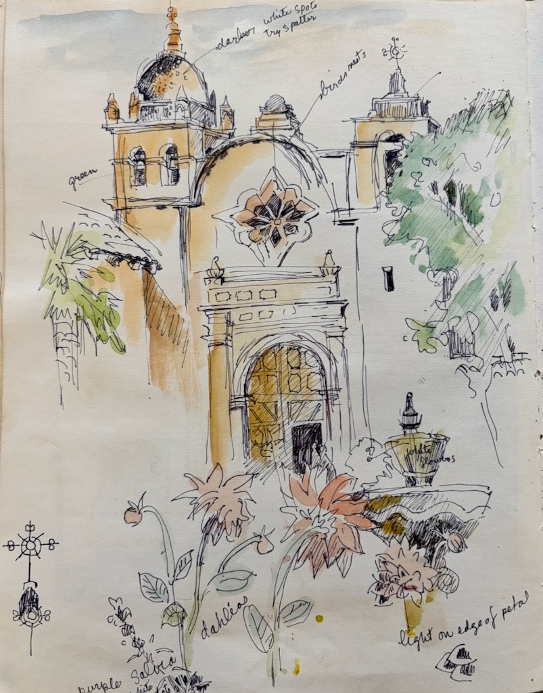

1981 Art Journal
- Artist: Patricia Ford Crass (American, 1923–2024)
- Date: 1981
- Medium: Watercolor and ink on paper (bound sketchbook journal)
- Subject: Studies from life, landscapes, and workshop exercises
- Context: Created during a period of intensive Bay Area study, including landscape classes with Tom Hill at the Asilomar in Pacific Grove on June 29, 1981, Tom Nicholas, Millard Sheets and others near Lovers Point on July 19-29, 1981
- Collection: Family private collection
Journal & Artistic Notes
Throughout the 1980s, Patricia Ford Crass kept illustrated art journals filled with on-location watercolor studies, sketches, and handwritten reflections on composition and technique. Created in 1981—the same year she studied landscape drawing and painting with Tom Hill, Tom Nicholas, Millard Sheets, and other artists at the Asilomar in Pacific Grove—this journal remains in the family's private collection.

Gallery


